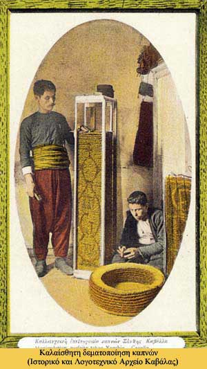

|

Η έλλειψη κεντρικού σχεδιασμού από την Οθωμανική διοίκηση και αργότερα από το ελληνικό κράτος, σχετικά με τον έλεγχο της παραγωγής του καπνού της Μακεδονίας και την εξασφάλιση μόνιμων αγορών για την απορρόφησή του, είχε ως αποτέλεσμα η διάθεση του προϊόντος να εξαρτάται από εξωτερικούς παράγοντες, από τις συγκυρίες και τις συνθήκες του διεθνούς εμπορίου.
Η συγκυρία της πτώσης των τιμών των δημητριακών και σιτηρών στη Μακεδονία έστρεψε τους αγρότες στην καλλιέργεια του καπνού, ενώ η μεγάλη ζήτησή του από τις αγορές της Ευρώπης και της Αμερικής στα τέλη του 19ου και στις αρχές του 20ου αιώνα προκάλεσε μεγάλη αύξηση του όγκου παραγωγής. Ο καπνός όμως εξαγόταν ως πρώτη ύλη (με κάποια επεξεργασία), χωρίς να καταφέρει να γίνει βιομηχανικό προϊόν στον τόπο παραγωγής του (σιγαρέτα, πούρα), έτσι ώστε να διασφαλιστεί η απορρόφησή του, με αποτέλεσμα να εξαρτάται από τις αγορές του εξωτερικού.
Η μεγάλη κρίση του 1912, λόγω της στροφής της διεθνούς αγοράς σε άλλες χώρες παραγωγής, ανέδειξε το πρόβλημα: Η υπερπαραγωγή έμεινε αδιάθετη και το εμπόριο του καπνού εξελίχτηκε, με κορύφωση τη δεκαετία του ’30, σε μια ακόμα εστία κοινωνικών εντάσεων.
|
|